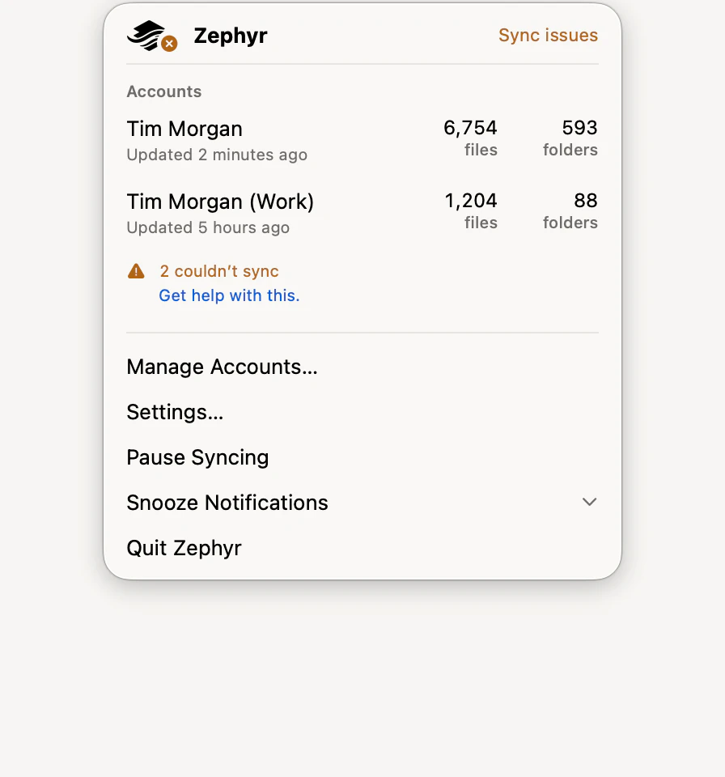

Zephyr has no main window that stays open. Its icon in the menu bar is the status readout, and clicking it opens the panel that holds everything else.
Click the Zephyr icon in the menu bar.

The top line is the busiest thing happening across all your accounts, or that syncing is paused: Up to date, Syncing, Uploading, Sync issues, Offline, or Can’t reach Dropbox.
Waiting for a cheaper network means this Mac is on a connection that costs you something and Zephyr is holding back the work nobody asked for. Files you open still download. See Limit how much bandwidth Zephyr uses.
Needs Attention appears only when macOS is withholding something Zephyr needs. Each row opens the System Settings pane that grants it.
Accounts lists each linked account with what it’s doing and how many files and folders it holds. Click an account to open it in Finder.
A warning under an account is either a problem with the account itself or a count of items that couldn’t sync. Clicking it opens the window that explains which.
The icon itself changes with the busiest account, so you can tell at a glance whether anything is moving without opening the panel.
Action | What it does |
|---|---|
Manage Accounts… | Opens the Zephyr window, where accounts are linked and unlinked. |
Settings… | Opens Zephyr’s settings. ⌘, |
Pause Syncing | Stops sending and fetching until you resume. See Pause syncing. |
Snooze Notifications | Holds every notification for 30 minutes, 1 hour, or 8 hours. |
Quit Zephyr | Quits. Your files stay in Finder, but nothing new syncs until you open Zephyr again. ⌘Q |
A row that opens a window closes the panel behind it; a row that changes something in place leaves it open. Press Escape to close the panel.